What to look for in November नवंबर में
Species whose season is November in eastern Uttar Pradesh, according to published accounts. A further 874 species are about all year.
प्रकाशित स्रोतों के अनुसार जिनका मौसम नवंबर है। 874 और प्रजातियाँ साल भर मिलती हैं।
जनवरी · फ़रवरी · मार्च · अप्रैल · मई · जून · जुलाई · अगस्त · सितंबर · अक्टूबर · नवंबर · दिसंबर
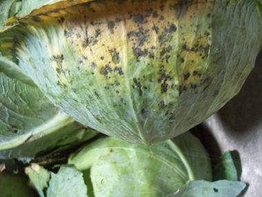


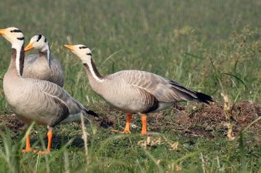
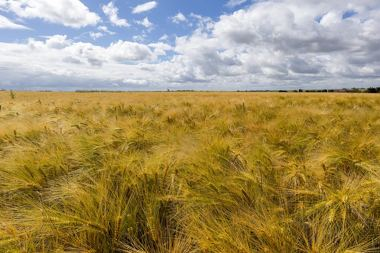
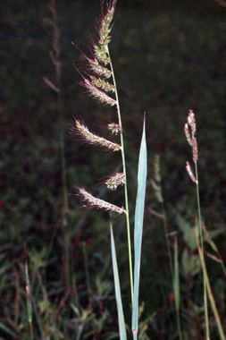
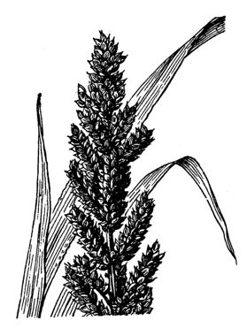

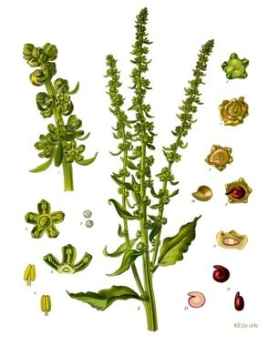


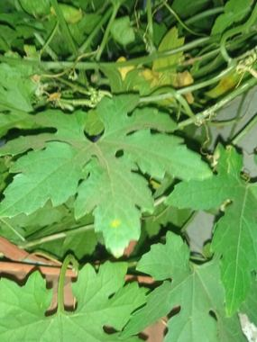
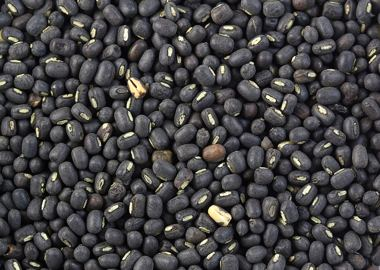
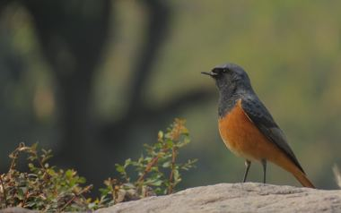
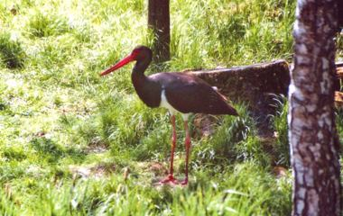


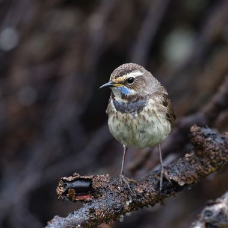
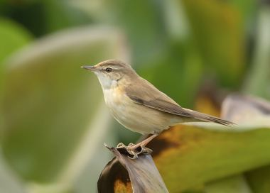
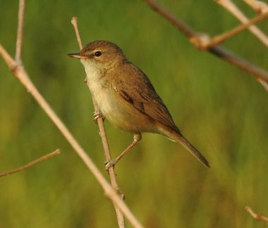
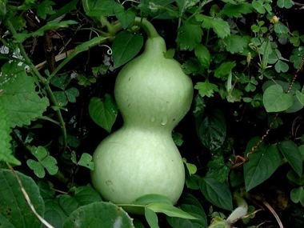
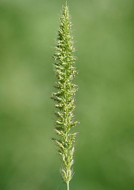
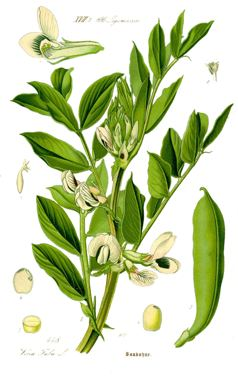
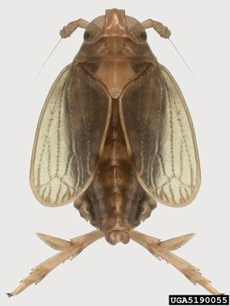
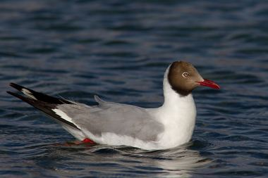
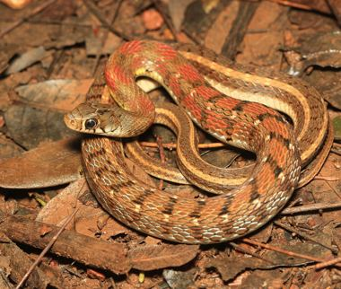


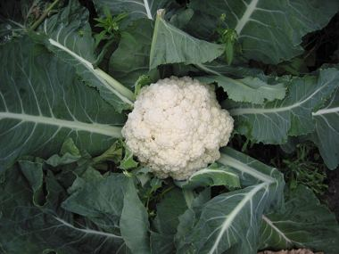
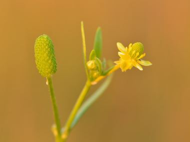
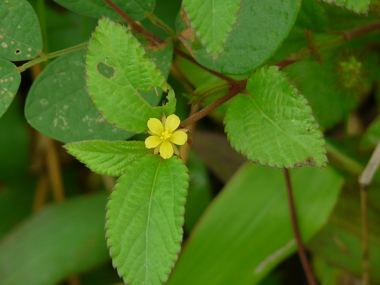
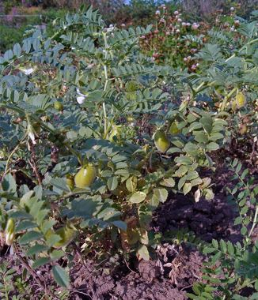
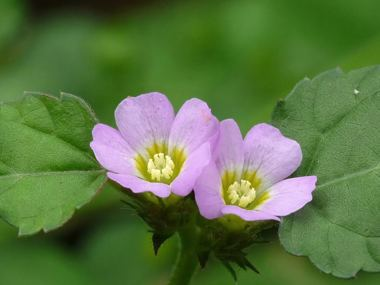
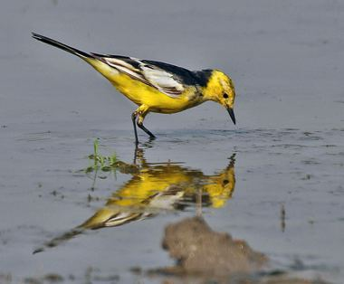

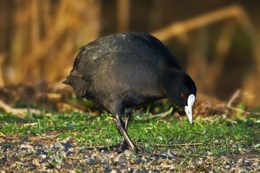
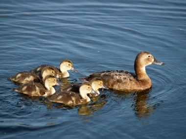
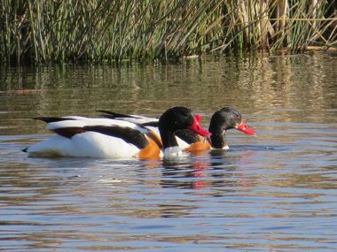
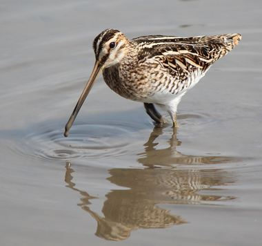
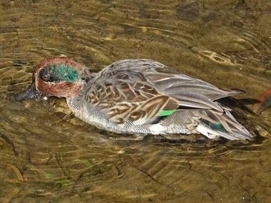
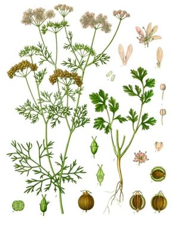
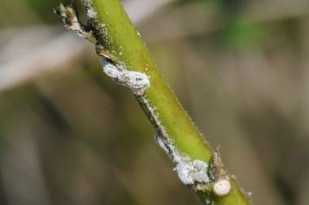

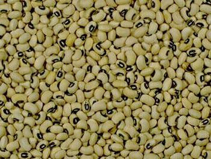
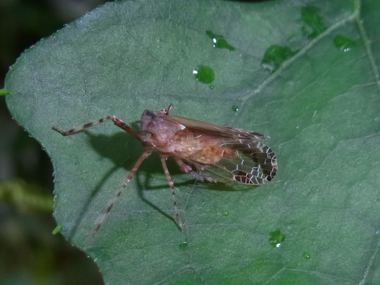
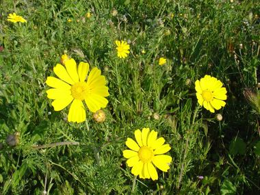


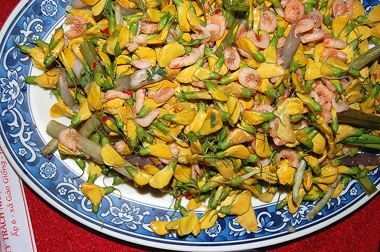
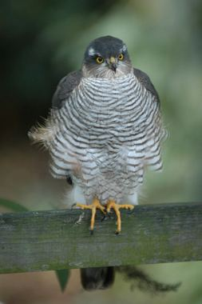
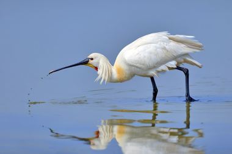
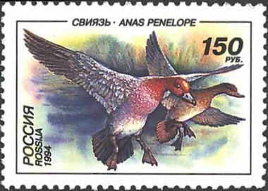
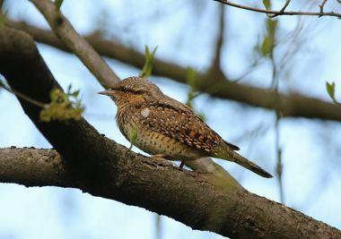
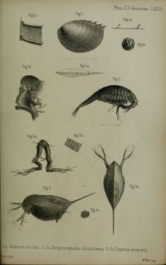
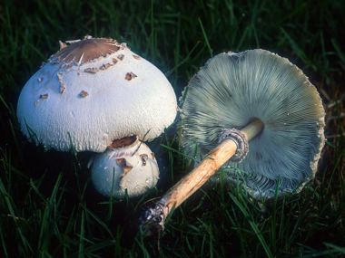
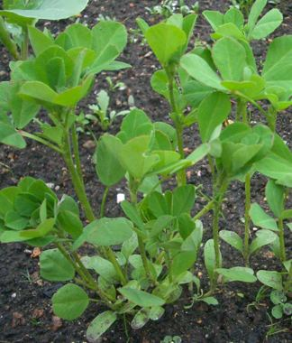
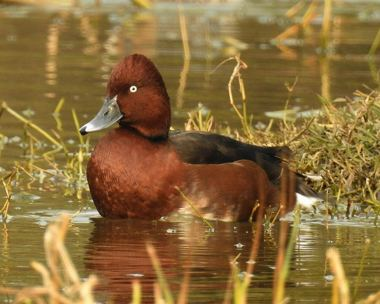

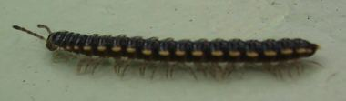
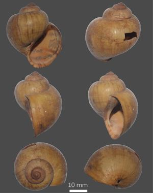
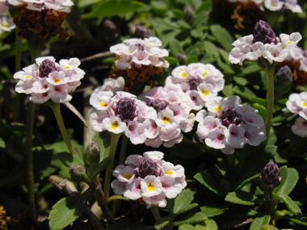
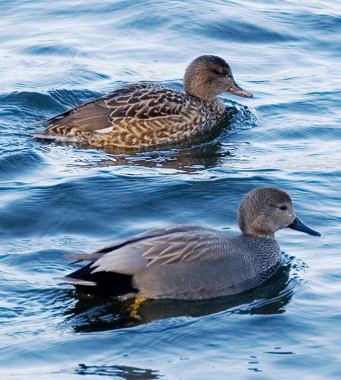
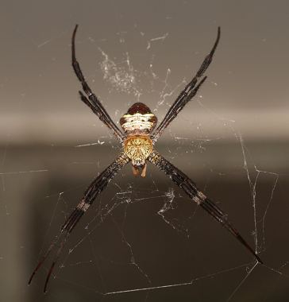
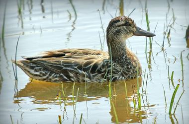